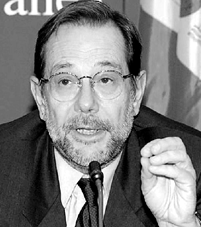

Faktaservice nr. 5 95/96, DESEMBER 1995
NY NATO-SJEF VAR NATO-MOTSTANDER:
Solana klar til innsats
Hvis det finnes en politiker som er likt av alle, heter han Javier Solana Madariaga og er Spanias utenriksminister.

Javier Solana Maderiaga.Solana har imponert på den internasjonale politiske arena denne høsten. Under Spanias formannskap i EUs ministerråd har den 53 år gamle sosialisten gjort en meget solid jobb. Analytikere har sagt at uten Solana ville Spanias formannskapsperiode lett blitt en katastrofe. Han er arkitekten og drivkraften bak Barcelona- deklarasjonen om fred, samarbeid og frihandel i middelhavsregionen. I disse dager er han fullt opptatt med å sy sammen dagsorden og skape kompromisser for EUs toppmøte i Madrid midt i neste måned. Men nå tyder alt på at statsminister Felipe Gonzalez må fullføre den jobben selv.
Spania ikke fullt med
Spania er et ungt NATO-medlem, men viktigst er at landet ikke er fullt med i alliansens integrerte struktur. Generalsekretærjobben betraktes som en belønning til personens hjemland. Derfor har man ansett det som unaturlig at et land som ikke vil være medlem helt og fullt får en slik ære. Av denne grunn har NATO-diplomater betraktet Solana som lite aktuell, men ikke utenkelig.Viktig og sentral
Jobben som generalsekretær i NATO betraktes nå som en meget sentral og viktig stilling. For det første går alliansen nå inn i sin største militære operasjon noen sinne i Bosnia. For det andre skal forholdet til Russland pleies og videreutvikles og alliansen skal i gang med mer formelle samtaler med sentral- og øst-europeiske land som ønsker medlemskap. Det gamle NATO står også midt i en dramatisk omforming. De fleste medlemmene har de siste årene kuttet forsvarsbudsjettene med 15–20 prosent, og USA har trukket ut flere hundre tusen soldater fra Europa. Den nye generalsekretæren skal videreutvikle forholdet til EU hvor sentrale land som Tyskland og Frankrike ønsker en styrking av den europeiske forsvarsidentitet. Samtidig må han ivareta forholdet til USA hvor sterke krefter i Kongressen helst ser at Europa tar over mesteparten av sitt forsvar selv.Dyktig politiker
Javier Solana ble født i Madrid 14. juli 1942. Hans familie var en av få i det spanske borgerskap som åpnet dørene for de fremadstormende sosialistene tidlig på 1960-tallet. Og den unge sosialisten Felipe Gonzalez var en hyppig gjest i deres hjem. Et langt vennskap startet. I 1963 ble Solana kastet ut av universitetet fordi han protesterte mot Francos styre. Året etter meldte han seg inn i det spanske sosialistpartiet. I 1976 ble han med i partiets eksekutivkomité og året etter ble han innvalgt i Spanias første demokratisk valgte parlament. Han er utdannet fysiker og er professor i fysikk ved Universidad Compultense de Madrid.Sin første ministerpost fikk Solana i 1982 som kulturminister i Spanias første sosialistregjering. I 1988 ble han minister for utdannelse og forskning og i 1992 fikk han jobben som utenriksminister i Gonzalez’ regjering.
Kilder: International Who’s Who og Ole Mathismoen, Aftenposten
[Innhold] [Info] [Aftenposten hjemmeside] [Til Fakta hovedside]